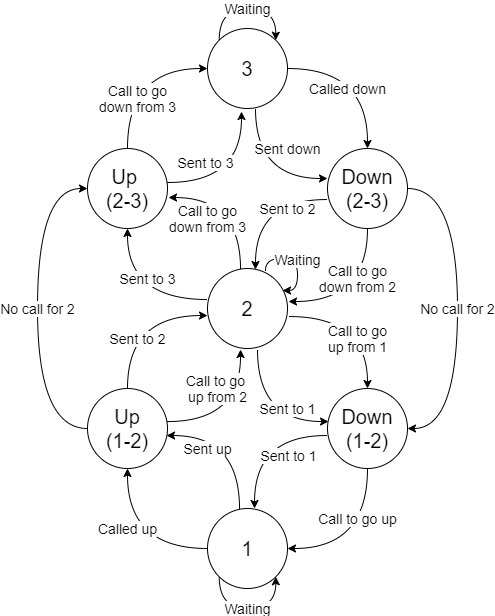
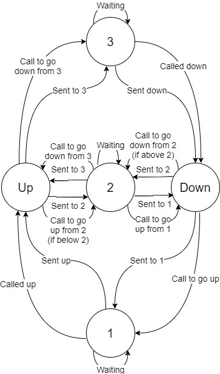

Welcome To Caleb's Logbook
Week 1
- Set up Project Plan, dividing tasks equally and according to experience
- Added the project plan to the Confluence page for review and discussed it with team-mates
- Attempted STM32 HAL programming using STM32CubeMx and Atollic TrueSTUDIO but it didn't work
Week 2
-
Tested CAN interface on local STM32:
- Finished setting up the CAN interface using the STM32 HAL introduction document from eConestoga (using STM32CubeIDE this time)
- Looked online to find how to run in loopback mode
- Tested the CAN interface by experimenting with filters
-
Recorded a
video
of it working
-
Added the code to a separate
repository
on Github
- Updated project plan as per last week's debrief
- Tested the VNC connection to the Raspberry Pi
Week 3
- Investigated Sabbath Mode
- Not sure if we should have an overall on/off command for Sabbath mod, especially if Sabbath mode ignores regular commands so still reaches all the floors consistently
- At least 3 options for operation:
- Stop at each floor up and down
- Stop at alternate floors up and down
- Rise all the way to the top and stop at each floor when going down only
- Overall process:
- Check time and date
- If the Sabbath, move to the first floor and then start following the chosen procedure (one of those listed above) while ignoring regular commands
- If not the Sabbath, wait for user input
- Investigated the database
- The database already exists with implemented controls and C++/PHP code for interacting with the database. Do we use this or write our own?
Week 4
- Tried to implement an SSH terminal in the browser using "shellinabox"
- Hosted the connection from a local Linux through https and could run shell commands through the browser from another computer on the local Wifi network
- Tried to implement the service on the Pi in order to test over the VPN but the service would not start
- Next day when trying to run the service over local Wifi, the service refused to start no matter what I tried
- Started looking into passing commands through JavaScript from the browser but that may not be possible since it seems that JavaScript is isolated from the system for security reasons
- Updated the project plan based on last week's feedback
- Updated the elevator control FSM based on feedback from last week

Week 5
- As per last week's debrief (not in the logbook though), I added a terminal to the project website diagnostics page. The project we used is available here.
- Looked into using the embedded SSH terminal on the diagnostics page for file editing
- It won't work as it is since it isn't an open connection
- Webpages time out every x seconds
- There might be permissions issues. Having sudo permissions available on the website can be dangerous if people outside the project sign into the terminal. If we kept the website behind a sign-in page where new users could not create an account without permission/confirmation, you could get around this issue.
- Updated the elevator control FSM based on feedback from last week

Week 6
- This week, I set up basic classes for PCAN and database interaction on the server Pi. I made a basic mainline around it so if that program is running, then a user on the website can control the elevator. (code)
- Changed the PHP side to update the requested floor column instead of the current floor column so the elevator could move and then the current floor would be updated by the Pi.
- Set up a database table to log how often the elevator stops at each floor.
Week 8 (Success Week)
- This week, I tried to set up the elevator code to run periodically with crontab but it doesn't seem to work in seconds.
- I decided to set up the elevator code as a service to periodically run the elevator moving exe "dbTesting" (that name should change). I set it to run every 2 seconds.
- One potential problem here is that only the last floor value is saved. So, some data may be lost. The database may need to be reconfigured or something else will need to be reworked.
- Looked into implementing an FSM but did not get very far. I will work on this in the coming week.
Week 9
- This week, I revamped the DB code to make it better
- I created a new repos with the elevator code. The main reason for the new repos was to reorganize all the files (although most files had a lot of rework)
- Made a program to substitute as the website for independent testing
- Implemented the FSM based on the lecture notes from DS&A S3
- There seems to be no way to know if the elevator is above or below floor 2 when it is moving. So, the FSM isn't perfect. Hopefully, I have a chance to take another look this week.
- Got communication from the database to the FSM locally but when I put it on the pi to add "move elevator" commands, the Pi decided not to behave. It failed consistently on a call to "next()" on a ResultSet pointer. Spent a few hours trying to debug.
- Because of the previous point, I removed the database communication for now. The user can type a button "press" and the elevator will move accordingly.
- Implemented a basic Sabbath mode. Right now, it runs on demand and doesn't care about what time it is.
Return